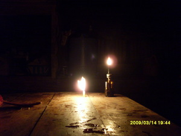

sulù 
/suluʔ/
n.
“light”
n.
a hard substance from the Salumayag, Buldung, Lawaan, and Dangeleg trees used for lamp of an ancient people
Ka sulù ne egkahiyen sika se gitè te kayu ne migkehal e ne egpuun te me kayu ne Salumayag, Buldung, Lawaan, wey Dangeleg ne eggamiten ne sulù te me kabuybuyahan.
Diyè te baley ney duen pad sulù ne inkedked ni Amè para kun te eglekep.
Eng. hard substance from the trees
Online dict status: -
Usage level: M
n.
a light source
Migkerep-kerep key rè iya mulè diyè te sulung te neebukan ka sulù ney.
Its so very dark inside the cave when our lamp turn off.
Eng. light source; lamp; light
Tag. ilaw
Ceb. sulô
Ilo.: silaw
OCM: Fire (372)
Online dict status: -
Usage level: B
Updated by: RJH,TME,RJH,QDL
Last updated: 13/Oct/2009
This page last updated: 19/May/2012
Copyright © 2009-2010, Matigsalug Language Christian Association, Inc